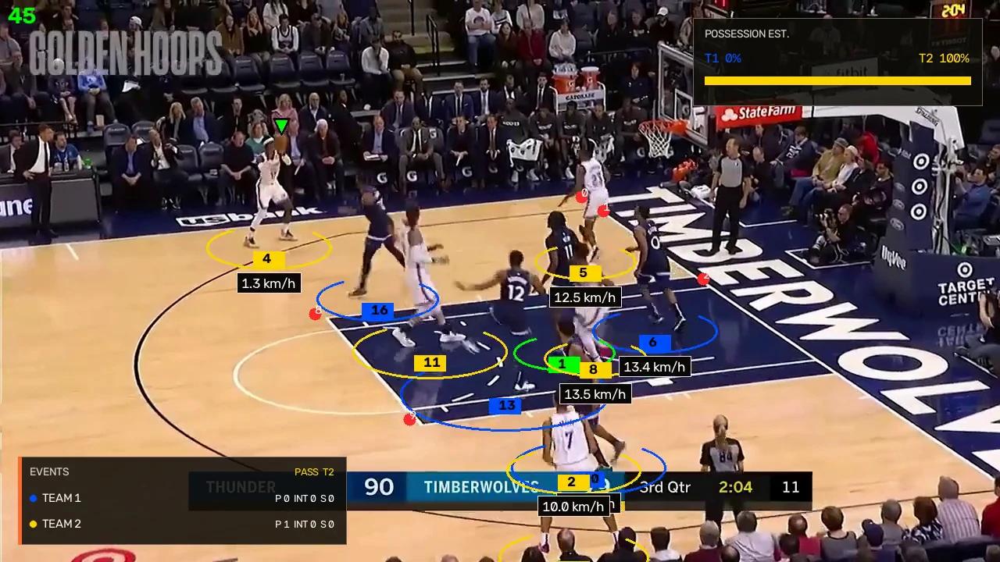

00:01.5
Annotated replay
The rendered output keeps detected player and ball tracks, team and possession estimates, and candidate events on the video for review.

CourtVision analyzes short basketball clips and produces an annotated replay, tactical court view, possession estimates, and timecoded pass and interception candidates. Results are experimental and require video review.
Public analysis is live.Create an account to analyze a short clip, or inspect the interactive sample first.
Review a preprocessed OKC vs. Timberwolves game sample. Select a detected pass or interception candidate to synchronize the annotated replay and tactical view.
The interface keeps model output close to the source play and leaves unresolved states visible.
The rendered output keeps detected player and ball tracks, team and possession estimates, and candidate events on the video for review.

Estimated player positions update to the selected timecode. Marker labels are internal track IDs, not jersey numbers.
This sample's Event Rundown contains four detected pass candidates. Other analyses keep assignments unknown when evidence is insufficient.
The public analysis profile stays narrow so real footage can expose accuracy and reliability failures.
Create an account to check a short clip against the current analysis profile, or review the working sample from end to end before uploading.
Analysis profileClips are limited to 30 seconds. Results are experimental, require video review, and expire after 24 hours.